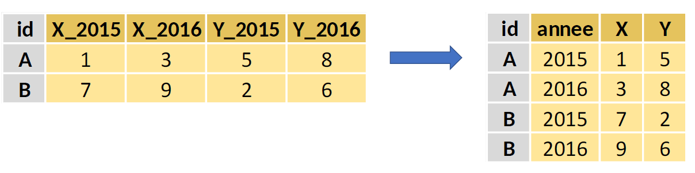

18 Manipuler des données avec le tidyverse
18.1 Tâches concernées et recommandations
L’utilisateur souhaite manipuler des données structurées sous forme de data.frame (sélectionner des variables, sélectionner des observations, créer des variables, joindre des tables, résumer l’information).
- Pour des tables de données de taille petite et moyenne (inférieure à 1 Go ou moins d’un million d’observations), il est recommandé d’utiliser les packages
tibble,dplyrettidyrqui font l’objet de la présente fiche ; - Pour des tables de données de grande taille (plus de 1 Go ou plus d’un million d’observations), il est recommandé d’utiliser soit le package
data.tableprésenté dans la fiche Manipuler des données avecdata.table, soit les packagesarrowetduckdbprésentés dans les fiches Manipuler des données avecarrowet Manipuler des données avecduckdb.
Certains exemples de cette fiche utilisent les données disponibles dans le package doremifasolData ; vous ne pourrez reproduire ces exemples que si ce package est installé sur la machine sur laquelle vous travaillez. Si vous ne savez pas si ce package est déjà installé, consultez la fiche Comment utiliser la documentation utilitR.
18.2 Présentation des packages dplyr, tidyr et tibble
18.2.1 Introduction
Les packages dplyr, tidyr et tibble font partie du tidyverse, une suite de packages dont l’objectif est de faciliter la manipulation de tables de données. De façon schématique, on peut dire que :
- le package
tibblepropose une nouvelle structure de données qui est une formalisation plus poussée dudata.frame(letibble), et des fonctions pour manipuler lestibbles; - le package
dplyrpropose des fonctions pour manipuler des données qui sont déjà organisées sous forme de table (sélectionner des lignes et des colonnes, calculer des statistiques descriptives) ; - le package
tidyrpropose des fonctions pour mettre en ordre des données et pour les organiser sous forme de tables (créer des tables à partir de données brutes ou de listes, décomposer une colonne ou une ligne en plusieurs, restructurer les données en format long ou wide).
Ces packages présentent plusieurs avantages :
- La syntaxe est structurée autour d’opérations élémentaires (les verbes), ce qui la rend très lisible ;
- La grammaire du
tidyverses’inspire du langage SQL pour fournir des commandes dont l’enchaînement est facile à comprendre, même sans faire tourner le code. Par exemple, la lignematable %>% select(mavariable) %>% summarise()est facilement compréhensible ; - Les opérations par groupe sont facilitées par l’instruction
group_by(); - Les noms des colonnes peuvent être appelés directement (pas besoin d’adopter la syntaxe
nomtable$nomvariablecomme dans la grammaire de base). Là aussi, la lecture du code en est facilitée ; - Plusieurs verbes peuvent facilement être combinés en utilisant l’opérateur
%>%(pipe) qui permet d’enchaîner les instructions (voir le paragraphe Enchaîner les manipulations avec l’opérateurpipe) ; - La suite de packages
tidyversecouvre la plupart des opérations qu’un statisticien est amené à réaliser (mais pas toutes.
Pour se servir de ces packages, il ne faut pas oublier de les charger avec la fonction library.
Les exemples de cette fiche s’appuient sur les données disponibles dans le package doremifasolData. On utilise en premier lieu la base permanente des équipements 2018.
Les objets récupérés en sortie de doremifasolData sont tous des data.frame, bien que le package s’appuie sur des fonctions issues de tidyverse. Il est donc nécessaire de les convertir en tibble avec la fonction as_tibble du package tibble.
18.2.2 Le tibble : un data.frame amélioré
Le tidyverse propose une version améliorée du data.frame de base : le tibble. Il s’agit d’un data.frame standard, avec quelques propriétés supplémentaires qui rendent son utilisation plus facile. Le package tibble contient par ailleurs des fonctions utiles pour manipuler les tibbles. Sauf exception, toutes les fonctions de R qui manipulent un data.frame fonctionneront sans problème avec un tibble.
Pour convertir un data.frame en tibble on utilise la fonction tibble::as_tibble(). Dans l’exemple suivant, on charge la table de la base permanente des équipements puis on la convertit en tibble.
# Charger la base permanente des équipements
bpe_ens_2018 <- doremifasolData::bpe_ens_2018
# Convertir ce data.frame en tibble
bpe_ens_2018_tbl <- as_tibble(bpe_ens_2018)Il y a deux différences principales entre un tibble et un data.frame :
-
La sélection (subsetting) fonctionne différemment : sélectionner une colonne dans un
data.framerenvoie un vecteur, alors que sélectionner une colonne dans untibblerenvoie untibbleà une seule colonne. Si on veut vraiment récupérer un vecteur à partir d’untibbleà une colonne, on utilise la fonctionpull.# Si on sélectionne une colonne dans un data.frame, # on obtient un vecteur. bpe_ens_2018[ , 1][1] "84" "84" "84" "84" "84" "84" "84" "84" "84" "84" [ reached getOption("max.print") -- omitted 1035554 entries ]# Si on sélectionne une colonne dans un tibble, # on obtient un tibble avec une seule colonne. bpe_ens_2018_tbl[ , 1]# A tibble: 1,035,564 × 1 REG <chr> 1 84 2 84 3 84 4 84 5 84 6 84 # ℹ 1,035,558 more rowspull(bpe_ens_2018_tbl[ , 1])[1] "84" "84" "84" "84" "84" "84" "84" "84" "84" "84" [ reached getOption("max.print") -- omitted 1035554 entries ] L’affichage des
tibblesest meilleur que celui desdata.frames. Vous pouvez par exemple remarquer que même sans la fonctionhead(), l’affichage d’untibbleaffiche toujours les dimensions de celui-ci (nombres de lignes et de colonnes), ainsi que le type des variables (en-dessous des noms des colonnes).
# Afficher les premières lignes d'un dataframe
head(bpe_ens_2018) REG DEP DEPCOM DCIRIS AN TYPEQU NB_EQUIP
1 84 01 01001 01001 2018 A401 2
[ reached 'max' / getOption("max.print") -- omitted 5 rows ]# Afficher les premières lignes d'un tibble
bpe_ens_2018_tbl# A tibble: 1,035,564 × 7
REG DEP DEPCOM DCIRIS AN TYPEQU NB_EQUIP
<chr> <chr> <chr> <chr> <dbl> <chr> <dbl>
1 84 01 01001 01001 2018 A401 2
2 84 01 01001 01001 2018 A404 4
3 84 01 01001 01001 2018 A504 1
4 84 01 01001 01001 2018 A507 1
5 84 01 01001 01001 2018 B203 1
6 84 01 01001 01001 2018 C104 1
# ℹ 1,035,558 more rows
18.2.4 Enchaîner les manipulations avec l’opérateur pipe
18.2.4.1 Présentation de l’opérateur pipe
Lorsqu’on enchaîne les manipulations sur une table de données, un problème est que le code devient peu lisible car il y a beaucoup d’opérations imbriquées les unes dans les autres, avec un grand nombre de parenthèses ou de crochets. L’opérateur pipe (noté %>%) du package magrittr permet de résoudre ce problème en réécrivant les opérations de façon plus lisible. Le principe de l’opérateur pipe est très simple :
- le terme qui précède l’opérateur est utilisé comme premier argument de la fonction qui suit l’opérateur ;
- les opérations peuvent être enchaînées en enchaînant les opérateurs
pipe; - l’opérateur
pipefonctionne quelle que soit la nature de l’argument ; - l’opérateur
pipefonctionne également à l’intérieur de parenthèses.
Voici un petit tableau qui vous donne des exemples :
| Ce code est équivalent à… | … ce code |
|---|---|
fonction(x) |
x %>% fonction() |
fonction3(fonction2(fonction1(x))) |
x %>% fonction1() %>% fonction2() %>% fonction3() |
mutate(tibble, y = log(x)) |
tibble %>% mutate(y = x %>% log()) |
18.2.4.2 Comment utiliser l’opérateur pipe avec le tidyverse
Un traitement statistique avec les packages du tidyverse prend généralement la forme d’une succession de verbes séparés par l’opérateur pipe (%>%). Il est possible d’aller à la ligne en mettant le pipe en bout de ligne (mais pas en début de ligne).
Voici un exemple détaillé pour comprendre l’utilisation du pipe. Toutes les fonctions utilisées sont présentées ailleurs dans cette fiche. Ce code se lit comme ceci : on part de la base permanente des équipements 2018, puis on la transforme en tibble, puis on conserve uniquement les stations services TYPEQU == "B316", puis on groupe les observations par département group_by(DEP), puis on calcule la somme du nombre de stations-services par département summarise(nb_equip_total = sum(NB_EQUIP, na.rm = TRUE)).
18.3 Manipuler des tables de données avec dplyr
Le package dplyr permet de manipuler facilement des données organisées sous forme de table, c’est-à-dire comprenant une colonne par variable et une ligne par observation. Si ce n’est pas le cas, vous pouvez utiliser le package tidyr pour organiser vos données (voir la section Mettre en ordre des données avec tidyr).
18.3.1 Manipuler une seule table avec dplyr
Dans dplyr, les manipulations simples de données sont résumées en quelques verbes :
-
select(): sélectionner des variables par leur nom ; -
rename(): renommer des variables ; -
filter(): sélectionner des observations selon une ou plusieurs conditions ; -
arrange(): trier la table selon une ou plusieurs variables ; -
mutate(): ajouter des variables qui sont fonction d’autres variables ; -
summarise(): calculer une statistique à partir de données ; -
group_by(): faire des opérations par groupe.
18.3.1.1 Sélectionner des variables : select()
La fonction select() permet de sélectionner des variables par leur nom, ou par une condition sur leur nom. Cette fonction est principalement utilisée de deux façons :
-
Avec une liste de noms de variables. Le code suivant sélectionne le code commune, le type d’équipement et le nombre d’équipement dans la base permanente des équipements :
-
Avec la position des colonnes. Le code suivant sélectionne les cinq premières colonnes :
-
Avec une condition logique. Par exemple, la fonction
starts_with("DEP")permet de sélectionner toutes les variables dont le nom commence par “DEP”.bpe_ens_2018_tbl %>% select(starts_with("DEP"))# A tibble: 1,035,564 × 2 DEP DEPCOM <chr> <chr> 1 01 01001 2 01 01001 3 01 01001 4 01 01001 5 01 01001 6 01 01001 # ℹ 1,035,558 more rowsLe tableau suivant donne la liste des conditions utilisables avec
select():
| Fonction | Signification |
|---|---|
select(starts_with("...") |
dont le nom commence par “…” |
select(ends_with("...") |
dont le nom se termine par “…” |
select(contains("...") |
contient “…” |
select(matches("...") |
vérifie une expression régulière (cf. fiche Manipuler des données textuelles |
select(all_of(...)) |
sélectionne les colonnes listées dans un vecteur en paramètre |
select(any_of(...)) |
identique à all_of(), mais sans erreur si la colonne n’existe pas |
select(everything()) |
toutes les colonnes (utile pour mettre une nouvelle colonne devant les autres) |
- On peut aussi renommer des colonnes avec la syntaxe
select(data, nouveau_nom = selection_colonne):
18.3.1.2 Renommer des variables : rename()
La fonction rename() permet de renommer des variables. La syntaxe est la suivante : rename(data, nouveau_nom = ancien nom). Voici un exemple :
# A tibble: 1,035,564 × 7
REG DEP code_commune DCIRIS AN TYPEQU NB_EQUIP
<chr> <chr> <chr> <chr> <dbl> <chr> <dbl>
1 84 01 01001 01001 2018 A401 2
2 84 01 01001 01001 2018 A404 4
3 84 01 01001 01001 2018 A504 1
4 84 01 01001 01001 2018 A507 1
5 84 01 01001 01001 2018 B203 1
6 84 01 01001 01001 2018 C104 1
# ℹ 1,035,558 more rowsLa fonction rename_with() permet de renommer un groupe de colonnes avec une fonction. La syntaxe est la suivante : rename_with(data, nom_fonction, selection_colonnes). Voici un exemple qui met en minuscules tous les noms de colonnes :
bpe_ens_2018_tbl %>%
rename_with(tolower)# A tibble: 1,035,564 × 7
reg dep depcom dciris an typequ nb_equip
<chr> <chr> <chr> <chr> <dbl> <chr> <dbl>
1 84 01 01001 01001 2018 A401 2
2 84 01 01001 01001 2018 A404 4
3 84 01 01001 01001 2018 A504 1
4 84 01 01001 01001 2018 A507 1
5 84 01 01001 01001 2018 B203 1
6 84 01 01001 01001 2018 C104 1
# ℹ 1,035,558 more rows
18.3.1.3 Sélectionner des observations : filter()
Le verbe filter() permet de sélectionner des observations selon une ou plusieurs conditions logiques. Voici un exemple de code qui sélectionne les magasins de chaussures (TYPEQU == "B304") dans le premier arrondissement de Paris (DEPCOM == "75101") dans la BPE.
# A tibble: 12 × 7
REG DEP DEPCOM DCIRIS AN TYPEQU NB_EQUIP
<chr> <chr> <chr> <chr> <dbl> <chr> <dbl>
1 11 75 75101 75101_0101 2018 B304 2
2 11 75 75101 75101_0103 2018 B304 1
3 11 75 75101 75101_0201 2018 B304 26
4 11 75 75101 75101_0202 2018 B304 6
5 11 75 75101 75101_0203 2018 B304 17
6 11 75 75101 75101_0204 2018 B304 13
# ℹ 6 more rowsVoici quelques utilisations fréquentes de filter() :
| Action | Code |
|---|---|
| Filtrer sur les modalités qualitatives d’une colonne | filter(DEP %in% c("75", "92")) |
| Filtrer sur les modalités quantitatives d’une colonne | filter(NB_EQUIP == 1) |
| Filtrer sur une variable caractère (voir la fiche données textuelles) | filter(str_detect(TYPEQU, "^A")) |
| Filtrer sur deux conditions (et) | filter(DEP == "75" & NB_EQUIP == 1) |
| Filtrer sur une alternative (ou) | filter(DEP == "75" | NB_EQUIP == 1) |
| Conserver les observations pour lesquelles la variable est manquante | filter(is.na(pop_2016)) |
| Conserver les observations pour lesquelles la variable est renseignée | filter( !is.na(pop_2016)) |
18.3.1.4 Trier la table : arrange()
Le verbe arrange() permet de trier les observations de la table selon une ou plusieurs colonnes. Par défaut, arrange trie par ordre croissant. Il faut utiliser desc(nom_de_variable) pour trier par ordre décroissant. Le code suivant trie la BPE selon le code commune et le type d’équipement.
# A tibble: 1,035,564 × 7
REG DEP DEPCOM DCIRIS AN TYPEQU NB_EQUIP
<chr> <chr> <chr> <chr> <dbl> <chr> <dbl>
1 84 01 01001 01001 2018 A401 2
2 84 01 01001 01001 2018 A404 4
3 84 01 01001 01001 2018 A504 1
4 84 01 01001 01001 2018 A507 1
5 84 01 01001 01001 2018 B203 1
6 84 01 01001 01001 2018 C104 1
# ℹ 1,035,558 more rowsVoici quelques utilisations fréquentes de arrange() :
| Action | Code |
|---|---|
| Trier sur une colonne en ordre croissant | arrange(NB_EQUIP) |
| Trier sur plusieurs colonnes en ordre croissant | arrange(DEPCOM, NB_EQUIP) |
| Trier sur une colonne en ordre décroissant | arrange(desc(NB_EQUIP)) |
Comme il n’est pas nécessaire dans R de trier les tables avant de faire une jointure (merge), le tri est utile surtout pour afficher à l’écran un tableau synthétique de données.
18.3.1.5 Ajouter et modifier des colonnes : mutate()
La fonction mutate() permet de créer de nouvelles colonnes ou de modifier des colonnes existantes. Il est possible d’utiliser toutes sortes de fonctions à l’intérieur d’une étape mutate(). Le code suivant crée une variable NB_EQUIP_3PLUS qui vaut TRUE si le nombre d’équipement est supérieur ou égal à 3, et FALSE sinon.
# A tibble: 1,035,564 × 8
REG DEP DEPCOM DCIRIS AN TYPEQU NB_EQUIP NB_EQUIP_3PLUS
<chr> <chr> <chr> <chr> <dbl> <chr> <dbl> <lgl>
1 84 01 01001 01001 2018 A401 2 FALSE
2 84 01 01001 01001 2018 A404 4 TRUE
3 84 01 01001 01001 2018 A504 1 FALSE
4 84 01 01001 01001 2018 A507 1 FALSE
5 84 01 01001 01001 2018 B203 1 FALSE
6 84 01 01001 01001 2018 C104 1 FALSE
# ℹ 1,035,558 more rowsPour créer une nouvelle variable, on utilise un nom de variable qui n’existe pas encore dans la table. Pour modifier une variable qui existe déjà, on utilise directement le nom de cette variable.
Voici quelques utilisations fréquentes de mutate() :
| Action | Code |
|---|---|
| Calculer une somme cumulée | mutate(NB_EQUIP_CUM = cumsum(NB_EQUIP, na.rm = TRUE)) |
| Calculer un total | mutate(NB_EQUIP_TOT = sum(NB_EQUIP, na.rm = TRUE)) |
| Sommer deux variables | mutate(NB_EQUIP_DOUBLE = NB_EQUIP + NB_EQUIP) |
| Extraire une sous-chaine de caractères (voir la fiche données textuelles) | mutate(CATEGORIE_EQ = str_sub(TYPEQU, 1L, 1L)) |
18.3.1.6 Calculer des statistiques : summarise()
La fonction summarise() permet de calculer une ou plusieurs statistiques à partir de la table de données. Cette fonction est souvent utilisée après la fonction group_by() pour calculer des statistiques par groupe, et elle conduit à une agrégation de la table en fonction des groupes définis par la fonction group_by (par défaut une agrégation sur l’ensemble de la table). Le code suivant calcule le nombre total d’équipements dans la BPE sum(NB_EQUIP, na.rm = TRUE), et le nombre total de boulangeries sum(NB_EQUIP * (TYPEQU == "B203"), na.rm = TRUE).
# A tibble: 1 × 2
NB_EQUIP_TOT NB_BOULANGERIES_TOT
<dbl> <dbl>
1 2504782 48568Il est possible d’utiliser un grand nombre de fonctions différentes avec summarise(). Ces fonctions peuvent être combinées entre elles, et il est possible d’en définir de nouvelles. Voici quelques fonctions courantes :
| Fonction | Code |
|---|---|
| Moyenne | mean() |
| Médiane | median() |
| Ecart-type | sd() |
| Minimum | min() |
| Maximum | max() |
| Valeur de la première valeur | first() |
| Valeur de la première valeur | last() |
| Nombre de lignes | n() |
| Nombre de valeurs distinctes | n_distinct() |
| Somme | sum() |
| Somme cumulée | cumsum() |
Les fonctions mutate() et summarise() calculent toutes les deux de nouvelles variables. Il arrive donc fréquemment qu’on les confonde, ou qu’on ne sache pas laquelle il faut utiliser. Comme indiqué précédemment, l’une, mutate(), conduit à l’ajout d’une variable supplémentaire, l’autre, summarise(), définit une procédure d’agrégation de la donnée. Voici une règle simple pour savoir quelle fonction utiliser :
-
Si vous voulez résumer une information contenue dans une table, il faut utiliser
summarise(). Exemple : calculer le nombre total d’équipements pour chaque commune. -
Si vous voulez ajouter une information dans une table (en conservant toutes les autres variables), il faut utiliser
mutate(). Exemple : ajouter dans la tablebpe_ens_2018_tblune colonne donnant le nombre total d’équipements pour chaque commune.
18.3.1.7 Faire des opérations par groupe : group_by()
La fonction group_by() permet de définir des groupes dans la table de données pour faire des opérations par groupe. L’utilisation de group_by() rend très utiles les opérations avec summarise(). Le code suivant groupe les données de la BPE par département group_by(DEP) puis calcule le nombre total d’équipements sum(NB_EQUIP, na.rm = TRUE) et le nombre total de boulangeries sum(NB_EQUIP * (TYPEQU == "B203"), na.rm = TRUE).
# A tibble: 101 × 3
DEP NB_EQUIP_TOT NB_BOULANGERIES_TOT
<chr> <dbl> <dbl>
1 01 21394 401
2 02 15534 339
3 03 12216 299
4 04 8901 185
5 05 8785 175
6 06 66766 966
# ℹ 95 more rowsLa fonction group_by peut également modifier le comportement des fonctions filter ou mutate, comme pour summarise. L’instruction suivante permet ainsi d’ajouter à la BPE une variable égale au nombre total de boulangeries dans le département.
# A tibble: 1,035,564 × 8
# Groups: DEP [101]
REG DEP DEPCOM DCIRIS AN TYPEQU NB_EQUIP NB_BOULANGERIES_DEP
<chr> <chr> <chr> <chr> <dbl> <chr> <dbl> <dbl>
1 84 01 01001 01001 2018 A401 2 401
2 84 01 01001 01001 2018 A404 4 401
3 84 01 01001 01001 2018 A504 1 401
4 84 01 01001 01001 2018 A507 1 401
5 84 01 01001 01001 2018 B203 1 401
6 84 01 01001 01001 2018 C104 1 401
# ℹ 1,035,558 more rowsL’instruction suivante permet de ne conserver que les communes pour lesquelles le nombre d’équipements est le plus important de leur région.
# A tibble: 18 × 7
# Groups: REG [18]
REG DEP DEPCOM DCIRIS AN TYPEQU NB_EQUIP
<chr> <chr> <chr> <chr> <dbl> <chr> <dbl>
1 27 25 25056 25056_0102 2018 B302 104
2 94 2A 2A041 2A041 2018 A504 110
3 75 33 33063 33063_0505 2018 A504 172
4 76 34 34003 34003_0201 2018 A504 287
5 53 35 35288 35288_0101 2018 A504 132
6 52 44 44109 44109_0106 2018 A504 236
# ℹ 12 more rowsAinsi, les opérations à la suite d’un group_by(), comme ici sum et max, sont calculées par groupe de lignes (ici suivant la colonne DEP).
Trois remarques sur l’utilisation de group_by() :
- si vous ne savez pas si une table comporte des groupes, vous pouvez afficher la liste des variables de groupe avec la fonction
group_vars(); - si vous appliquez une instruction
group_by()à une table qui comporte déjà des groupes, alors les groupes sont redéfinis ; - il est prudent d’appliquer la fonction
ungroup()à vos données une fois que les opérations par groupe ont été réalisées, afin que les opérations suivantes ne soient pas effectuées par groupe par mégarde.
18.3.1.8 Appliquer une fonction dplyr sur un groupe de colonnes : across()
La fonction across() permet de sélectionner un groupe de colonnes sur lequel on veut appliquer une fonction dplyr. Ainsi on peut appliquer une fonction sur des colonnes en les sélectionnant comme le fait select(). Si on veut sélectionner des colonnes en fonction de leur type, on utilise en outre where(). Le code suivant groupe les données de la BPE avec les deux colonnes dont le nom commence par “DEP”, puis effectue la somme de toutes les colonnes de type numérique.
# A tibble: 34,065 × 4
# Groups: DEP [101]
DEP DEPCOM AN NB_EQUIP
<chr> <chr> <dbl> <dbl>
1 01 01001 22198 15
2 01 01002 4036 2
3 01 01004 472212 655
4 01 01005 64576 68
5 01 01006 6054 3
6 01 01007 58522 60
# ℹ 34,059 more rows
18.3.2 Manipuler plusieurs tables avec dplyr
18.3.2.1 Concaténer deux tables
Le package dplyr propose la fonction bind_rows() pour superposer deux ou plusieurs tables (en empilant des observations). Deux remarques sur l’utilisation de cette fonction :
-
bind_rows()combine les tables en fonction du nom des colonnes, l’ordre des colonnes n’a pas donc d’importance ; - si une colonne est manquante dans une des tables, alors des valeurs manquantes sont générées dans la table de sortie.
Le package dplyr contient également la fonction bind_cols() qui permet de juxtaposer des tables (qui doivent avoir le même nombre d’observations). Il est conseillé de ne pas se servir de cette fonction. En effet, cette fonction juxtapose les colonnes par position (la première ligne d’une table est juxtaposée à la première de l’autre table), sans aucun contrôle. Si les différentes tables ne sont pas triées de la même façon, la table de sortie sera incohérente. Pour rapprocher deux tables, il est fortement conseillé d’utiliser les fonctions de jointures : inner_join, left_join, full_join… Ces fonctions sont présentées dans le paragraphe Joindre des tables.
18.3.2.2 Joindre des tables
Avec dplyr, les jointures se réalisent grâce aux fonctions left_join, right_join, inner_join, full_join et anti_join. Ces fonctions prennent les arguments suivants :
- le nom des deux
data.frameà joindre ; - les variables de jointure, défini par l’argument
by. Lorsque la variable de jointure ne porte pas le même nom dans les deux tables, on utilise le paramètreby = c("var_x" = "var_y"). S’il y a plusieurs variables de jointures, on écritby = c("var_x1" = "var_y1", "var_x2" = "var_y2").
Il est préférable d’utiliser ces fonctions sur des objets tibble plutôt que data.frame. On va donc convertir les deux tables avant de présenter un exemple :
library(dplyr)
filosofi_com_2016_tbl <- as_tibble(doremifasolData::filosofi_com_2016)
cog_com_2019_tbl <- as_tibble(doremifasolData::cog_com_2019)Voici un exemple dans lequel on utilise la fonction left_join pour réaliser une jointure à gauche entre la table des données Filosofi et la table des communes du COG.
# A tibble: 6 × 39
CODGEO LIBGEO NBMENFISC16 NBPERSMENFISC16 MED16 PIMP16 TP6016 TP60AGE116
<chr> <chr> <dbl> <dbl> <dbl> <dbl> <dbl> <dbl>
1 01001 L'Abergeme… 313 796. 22679 NA NA NA
2 01002 L'Abergeme… 101 248 24382. NA NA NA
3 01004 Ambérieu-e… 6363 14228 19721 49 17 19
4 01005 Ambérieux-… 633 1662. 23378 NA NA NA
5 01006 Ambléon NA NA NA NA NA NA
6 01007 Ambronay 1087 2684 22146. 57 NA NA
# ℹ 31 more variables: TP60AGE216 <dbl>, TP60AGE316 <dbl>, TP60AGE416 <dbl>,
# TP60AGE516 <dbl>, TP60AGE616 <dbl>, TP60TOL116 <dbl>, TP60TOL216 <dbl>,
# PACT16 <dbl>, PTSA16 <dbl>, PCHO16 <dbl>, PBEN16 <dbl>, PPEN16 <dbl>,
# PPAT16 <dbl>, PPSOC16 <dbl>, PPFAM16 <dbl>, PPMINI16 <dbl>, PPLOGT16 <dbl>,
# PIMPOT16 <dbl>, D116 <dbl>, D916 <dbl>, RD16 <dbl>, typecom <chr>,
# reg <chr>, dep <chr>, arr <chr>, tncc <chr>, ncc <chr>, nccenr <chr>,
# libelle <chr>, can <chr>, comparent <chr>La syntaxe pour réaliser les autres types de jointure est très similaire :
| Type de jointure | Syntaxe dplyr
|
|---|---|
| Jointure à gauche | left_join(x = filosofi_com_2016_tbl, y = cog_com_2019_tbl, by = c("CODGEO" = "com")) |
| Jointure à droite | right_join(x = filosofi_com_2016_tbl, y = cog_com_2019_tbl, by = c("CODGEO" = "com")) |
| Jointure externe | full_join(x = filosofi_com_2016_tbl, y = cog_com_2019_tbl, by = c("CODGEO" = "com")) |
| Anti-jointure | anti_join(x = filosofi_com_2016_tbl, y = cog_com_2019_tbl, by = c("CODGEO" = "com")) |
La jointure de deux ou plusieurs tables est une opération lourde qui doit être soigneusement préparée. Il est recommandé de consulter la fiche [Joindre des tables de données] qui présente un certain nombre de règles et de bonnes pratiques sur les jointures.
18.4 Mettre en ordre des données avec tidyr
Le package tidyr fournit de multiples fonctions pour retraiter et restructurer des données afin de les organiser sous forme de table (on parle de tidy data). Ces fonctions permettent de résoudre un grand nombre de problèmes : retraiter des colonnes et des lignes, restructurer des tables, convertir des listes imbriquées en tables de données… Elles prennent la forme de verbes qui complètent ceux de dplyr et s’intègrent parfaitement dans les séries de pipes (%>%), les pipelines, permettant d’enchaîner les opérations.
18.4.1 Retraiter des colonnes avec tidyr
18.4.1.1 separate_wider_delim : scinder une colonne en plusieurs
Il arrive que plusieurs informations réunies en une seule colonne et qu’on souhaite les séparer. Les fonctions préfixées par separate_ permettent d’effectuer cette opération. Plus précisément :
-
separate_wider_positionpermet d’effectuer cette séparation sur la base d’une largeur ;
-
separate_wider_delimpermet d’effectuer cette séparation sur la base d’un séparateur identifié.
Ces fonctions partagent comme argument principal le nom de la colonne à scinder.
La fonction separate_wider_position attend ensuite l’argument widths sous la forme d’un vecteur qui indique la position des éléments à scinder.
Voici un exemple qui utilise la table des communes du Code Officiel Géographique. Dans cette table, la colonne com (code commune Insee) contient deux informations : le numéro du département et le numéro de la commune.
cog_com_2019_tbl <- doremifasolData::cog_com_2019 %>% as_tibble()
cog_com_2019_tbl# A tibble: 37,930 × 11
typecom com reg dep arr tncc ncc nccenr libelle can comparent
<chr> <chr> <chr> <chr> <chr> <chr> <chr> <chr> <chr> <chr> <chr>
1 COM 01001 84 01 012 5 ABERGEME… Aberg… L'Aber… 0108 <NA>
2 COM 01002 84 01 011 5 ABERGEME… Aberg… L'Aber… 0101 <NA>
3 COM 01004 84 01 011 1 AMBERIEU… Ambér… Ambéri… 0101 <NA>
4 COM 01005 84 01 012 1 AMBERIEU… Ambér… Ambéri… 0122 <NA>
5 COM 01006 84 01 011 1 AMBLEON Amblé… Ambléon 0104 <NA>
6 COM 01007 84 01 011 1 AMBRONAY Ambro… Ambron… 0101 <NA>
# ℹ 37,924 more rowsVoici comment on peut utiliser separate_wider_position pour scinder com en deux nouvelles colonnes code_dep et code_com. La première colonne code_dep est extraite à partir des deux premiers caractères (position 2) et la deuxième colonne code_com est extraite à partir du troisième caractère (position 3). Vous pouvez noter que la colonne com a disparu, car par défaut les fonctions préfixées par separate_ supprime la colonne scindée. Si on veut la conserver, il faut ajouter l’option cols_remove = FALSE.
cog_com_2019_tbl %>%
separate_wider_position(com, widths = c(code_dep = 2, code_com = 3))# A tibble: 37,930 × 12
typecom code_dep code_com reg dep arr tncc ncc nccenr libelle can
<chr> <chr> <chr> <chr> <chr> <chr> <chr> <chr> <chr> <chr> <chr>
1 COM 01 001 84 01 012 5 ABERGE… Aberg… L'Aber… 0108
2 COM 01 002 84 01 011 5 ABERGE… Aberg… L'Aber… 0101
3 COM 01 004 84 01 011 1 AMBERI… Ambér… Ambéri… 0101
4 COM 01 005 84 01 012 1 AMBERI… Ambér… Ambéri… 0122
5 COM 01 006 84 01 011 1 AMBLEON Amblé… Ambléon 0104
6 COM 01 007 84 01 011 1 AMBRON… Ambro… Ambron… 0101
# ℹ 37,924 more rows
# ℹ 1 more variable: comparent <chr>La fonction separate_wider_delim attend ensuite :
- L’argument delim sous la forme d’une chaîne de caractères qui indique le séparateur à utiliser.
- L’argument names sous la forme d’un vecteur qui indique les noms des nouvelles colonnes.
Voici un exemple pour illustrer comment on peut utiliser separate_wider_delim. On utilise ici le séparateur “espace” pour scinder la colonne libelle et définir les nouvelles colonnes prenom et nom.
tibble(id = 1:4, libelle = c("Lino Galiana", "Olivier Meslin", "Pierre Lamarche", "Damien Dotta")) %>%
separate_wider_delim(libelle, delim = " ", names = c("prenom","nom"))# A tibble: 4 × 3
id prenom nom
<int> <chr> <chr>
1 1 Lino Galiana
2 2 Olivier Meslin
3 3 Pierre Lamarche
4 4 Damien Dotta Si vous souhaitez utiliser des expressions régulières, il existe également la fonction separate_wider_regex.
18.4.1.2 unite : regrouper plusieurs colonnes en une seule
La fonction unite permet est de réaliser l’opération inverse de separate : regrouper plusieurs colonnes en une seule. Elle prend trois arguments principaux :
- le nom de la colonne à créer ;
- un vecteur indiquant les noms des variables à regrouper ;
- le séparateur
sepqui indique quel séparateur doit être introduit entre les variables regroupées (par défaut,uniteutilise le caractère_).
Voici un exemple où l’on regroupe le code commune Insee et le nom officiel de la commune, avec ” - ” comme séparateur. Vous pouvez noter que les colonnes com et ncc ont disparu, car par défaut unite supprime les colonnes regroupées. Si on veut les conserver, il faut ajouter l’option remove = FALSE.
# A tibble: 37,930 × 10
typecom code_et_nom reg dep arr tncc nccenr libelle can comparent
<chr> <chr> <chr> <chr> <chr> <chr> <chr> <chr> <chr> <chr>
1 COM 01001 - ABERGE… 84 01 012 5 Aberg… L'Aber… 0108 <NA>
2 COM 01002 - ABERGE… 84 01 011 5 Aberg… L'Aber… 0101 <NA>
3 COM 01004 - AMBERI… 84 01 011 1 Ambér… Ambéri… 0101 <NA>
4 COM 01005 - AMBERI… 84 01 012 1 Ambér… Ambéri… 0122 <NA>
5 COM 01006 - AMBLEON 84 01 011 1 Amblé… Ambléon 0104 <NA>
6 COM 01007 - AMBRON… 84 01 011 1 Ambro… Ambron… 0101 <NA>
# ℹ 37,924 more rows
18.4.1.3 replace_na : remplacer des valeurs manquantes
La fonction replace_na permet de remplacer des valeurs manquantes (NA). Cette fonction peut être utilisée de deux façons, que l’on va illustrer avec les données suivantes :
# A tibble: 4 × 2
x y
<dbl> <chr>
1 1 a
2 2 <NA>
3 3 b
4 NA <NA> Premier usage : on remplace les valeurs manquantes dans une colonne d’un data.frame. Dans ce cas, la fonction prend deux arguments : le nom de la variable et la valeur utilisée pour remplacer les valeurs manquantes. Voici un exemple :
df %>%
mutate(x = replace_na(x, 888))# A tibble: 4 × 2
x y
<dbl> <chr>
1 1 a
2 2 <NA>
3 3 b
4 888 <NA> Second usage : on remplace les valeurs manquantes dans toutes les colonnes d’un data.frame. Dans ce cas, la fonction prend deux arguments : le nom du data.frame, et une liste donnant pour chaque variable la valeur à utiliser pour remplacer les valeurs manquantes. Voici un exemple :
df %>%
replace_na(list(x = 888, y = "zzz"))# A tibble: 4 × 2
x y
<dbl> <chr>
1 1 a
2 2 zzz
3 3 b
4 888 zzz
18.4.1.4 complete : compléter des combinaisons de variables manquantes
La fonction complete permet de compléter des combinaisons manquantes de valeurs de plusieurs colonnes (autrement dit, de compléter un produit cartésien incomplet). Dans le tableau de donnée suivant, seuls les pays ayant remporté la Coupe du Monde de football sont renseignés, avec l’année de leur victoire. Supposons qu’on veuille compléter ce tableau, en indiquant 0 lorsqu’un pays n’a pas remporté la Coupe du Monde.
# A tibble: 4 × 3
pays annee victoire
<chr> <dbl> <dbl>
1 France 1998 1
2 France 2018 1
3 Espagne 2010 1
4 Angleterre 1966 1On peut l’utiliser de cette manière :
# A tibble: 12 × 3
pays annee victoire
<chr> <dbl> <dbl>
1 Angleterre 1966 1
2 Angleterre 1998 NA
3 Angleterre 2010 NA
4 Angleterre 2018 NA
5 Espagne 1966 NA
6 Espagne 1998 NA
# ℹ 6 more rowsOn voit que les combinaisons manquantes ont bien été ajoutées par complete. Par défaut les lignes insérées comprennent des valeurs manquantes NA pour les colonnes restantes. On peut néanmoins choisir une autre valeur avec l’argument fill, qui prend la forme d’une liste nommée. Dans le cas présent, la liste ne comprend qu’un seul élément car il n’y a qu’une seule variable à compléter :
# A tibble: 12 × 3
pays annee victoire
<chr> <dbl> <dbl>
1 Angleterre 1966 1
2 Angleterre 1998 0
3 Angleterre 2010 0
4 Angleterre 2018 0
5 Espagne 1966 0
6 Espagne 1998 0
# ℹ 6 more rowsSi l’on ne souhaite pas inclure toutes les colonnes dans le calcul des combinaisons de valeurs, on peut utiliser l’option nesting (taper ?tidyr::complete pour les détails).
18.4.2 Restructurer des données avec tidyr
18.4.2.1 Principe de la restructuration des données
Une table de données stocke des informations sous forme de lignes et de colonnes. Au cours d’un traitement statistique, il est souvent nécessaire de restructurer les données, en transformant en colonnes certaines informations qui figuraient en ligne (ou inversement). Les deux principales opérations de restructuration des données peuvent être illustrées par les deux transformations suivantes :
- Transformation wide to long :

- Transformation long to wide :

Pour illustrer ces transformations, nous allons utiliser les données du répertoire Filosofi 2016 agrégées au niveau des EPCI (table filosofi_epci_2016), et disponibles dans le package doremifasolData. On convertit cette table en tibble et on conserve uniquement certaines variables grâce à la fonction select.
18.4.2.2 pivot_longer : transformer des colonnes en lignes
La fonction pivot_longer permet de restructurer des données en transformant des colonnes en lignes. Elle sert fréquemment au début d’un traitement, pour transformer des données mal structurées en une table facile à traiter. Cette fonction prend quatre arguments principaux :
- le
data.frame(ou letibble) auquel elle est appliquée ; -
cols: un vecteur contenant le nom des colonnes dont les valeurs vont être transposées ; -
names_to: le nom de la nouvelle colonne qui va contenir les noms des colonnes transposées ; -
values_to: le nom de la nouvelle colonne qui va contenir les valeurs des colonnes transposées.
Pour illustrer l’usage de cette fonction, nous allons utiliser les données du répertoire Filosofi 2016 agrégées au niveau des EPCI (table filosofi_epci_2016), et disponibles dans le package doremifasol. On convertit cette table en tibble et on conserve uniquement certaines variables grâce à la fonction select.
# A tibble: 1,244 × 8
CODGEO TP6016 TP60AGE116 TP60AGE216 TP60AGE316 TP60AGE416 TP60AGE516
<chr> <dbl> <dbl> <dbl> <dbl> <dbl> <dbl>
1 200000172 8.8 12.5 9.4 9.7 7.9 6.6
2 200000438 8 9.5 6.5 9.1 9 6
3 200000545 23.7 38.2 30.8 32 20.5 14.9
4 200000628 20.1 28.1 22.4 25.5 18.2 17.1
5 200000800 11.4 NA NA 15.9 12 NA
6 200000925 6.5 NA 6 6.7 7.6 5.5
# ℹ 1,238 more rows
# ℹ 1 more variable: TP60AGE616 <dbl>Nous allons restructurer cette table pour obtenir une nouvelle table, avec une observation par EPCI et par tranche d’âge. Voici le code qui permet d’obtenir cette table : on transpose les valeurs des colonnes dont le nom commence par “TP” (cols = starts_with("TP")), le nom des colonnes transposées sera indiquée dans la nouvelle colonne “tranche_age” (names_to = "tranche_age") et les valeurs des colonnes transposées seront indiquées dans la colonne “taux_pauvrete” (values_to = "taux_pauvrete").
donnees_pauvrete_long <- filosofi_epci_2016_tbl %>%
pivot_longer(cols = starts_with("TP"),
names_to = "tranche_age",
values_to = "taux_pauvrete")
donnees_pauvrete_long# A tibble: 8,708 × 3
CODGEO tranche_age taux_pauvrete
<chr> <chr> <dbl>
1 200000172 TP6016 8.8
2 200000172 TP60AGE116 12.5
3 200000172 TP60AGE216 9.4
4 200000172 TP60AGE316 9.7
5 200000172 TP60AGE416 7.9
6 200000172 TP60AGE516 6.6
7 200000172 TP60AGE616 NA
8 200000438 TP6016 8
9 200000438 TP60AGE116 9.5
10 200000438 TP60AGE216 6.5
# ℹ 8,698 more rowsIl est recommandé de travailler avec des données en format long plutôt qu’en format wide, notamment lorsque vous voulez faire des graphiques. En effet, le package de visualisation graphique ggplot2 est optimisé pour manipuler des données en format long (voir la fiche [Faire des graphiques avec ggplot2]). Ce conseil est particulièrement important si vous voulez représenter un graphique avec des groupes : il est préférable que les groupes soient empilés (format long) plutôt que juxtaposés (format wide), car le code est plus rapide et surtout plus facile à écrire.
18.4.2.3 pivot_wider : transformer des lignes en colonnes
La fonction pivot_wider permet de restructurer des données en transformant des lignes en colonnes. Cette fonction prend quatre arguments principaux :
- le
data.frame(ou letibble) auquel elle est appliquée ; -
id_cols: un vecteur contenant le nom des colonnes qui définissent les observations de la table transposée ; -
names_from: un vecteur contenant le nom de la (ou des) colonne(s) qui donne(nt) les noms des nouvelles colonnes ; -
values_from: un vecteur contenant le nom de la (ou des) colonne(s) dont les valeurs vont être transposées.
Par ailleurs, l’option names_prefix permet de définir le préfixe du nom des nouvelles colonnes, ce qui est utile pour avoir des noms explicites.
# A tibble: 186 × 19
TYPEQU nb_equip_reg01 nb_equip_reg02 nb_equip_reg03 nb_equip_reg04
<chr> <dbl> <dbl> <dbl> <dbl>
1 A101 2 2 1 7
2 A104 20 21 16 28
3 A105 1 1 1 1
4 A106 2 1 2 2
5 A107 2 1 1 4
6 A108 2 1 1 2
# ℹ 180 more rows
# ℹ 14 more variables: nb_equip_reg06 <dbl>, nb_equip_reg11 <dbl>,
# nb_equip_reg24 <dbl>, nb_equip_reg27 <dbl>, nb_equip_reg28 <dbl>,
# nb_equip_reg32 <dbl>, nb_equip_reg44 <dbl>, nb_equip_reg52 <dbl>,
# nb_equip_reg53 <dbl>, nb_equip_reg75 <dbl>, nb_equip_reg76 <dbl>,
# nb_equip_reg84 <dbl>, nb_equip_reg93 <dbl>, nb_equip_reg94 <dbl>Il est conseillé de bien réfléchir avant de restructurer en format wide, et de ne le faire que lorsque cela paraît indispensable. En effet, s’il est tentant de restructurer les données sous format wide car ce format peut paraître plus intuitif, il est généralement plus simple et plus rigoureux de traiter les données en format long. Ceci dit, il existe des situations dans lesquelles il est indiqué de restructurer les données en format wide. Voici deux exemples :
- produire un tableau synthétique de résultats, prêt à être diffusé, avec quelques colonnes donnant des indicateurs par catégorie (exemple : la table
filosofi_epci_2016du packagedoremifasolData, qui contient plusieurs colonnes contenant le taux de pauvreté pour différentes tranches d’âge) ; - produire une table avec une colonne par année, de façon à calculer facilement un taux d’évolution entre deux dates.
18.5 Programmer des fonctions avec le tidyverse
Lorsqu’une suite d’opérations est amenée à être effectuée plusieurs fois, une bonne pratique consiste à factoriser son code, notamment grâce à des fonctions définies par l’utilisateur. Le site internet pratiques.utilitr.org présente notamment quelques recommandations de cet ordre.
18.5.1 Présentation de la difficulté à fonctionnaliser
La fonctionnalisation n’est pas simple lorsqu’on travaille avec le tidyverse, en raison de l’évaluation non standard que celui-ci exploite. En effet, le tidyverse est un paradigme de traitement des données qui cherche à faciliter au maximum son utilisation. Pour ce faire, comme vu précédemment, il n’est pas besoin d’écrire le nom des variables entre guillemets, ou de répéter le nom de la base que l’on exploite, ni même d’utiliser le $. Toutefois, cette facilité génère des difficultés lorsqu’on souhaite créer une fonction. Le code suivant montre deux traitements qui, en toute logique, devrait donner des résultats similaires.
Alors que R parvient parfaitement à comprendre que le terme REG fait référence à un nom de colonne de la base dans le premier cas, il ne le comprend pas dans le second cas ! Ceci est dû aux fonctions du tidyverse qui permettent cette flexibilité, tandis que la fonction selectionner_colonne cherche un objet qui s’intitulerait REG, sans comprendre qu’il s’agit du nom de la colonne du jeu de données.
L’évaluation non-standard est un concept complexe et très riche dans R. La tidy-evaluation en est une utilisation spécifique.
De nombreuses fonctionnalités élémentaires de R utilisent de telles évaluations. Par exemple, les commandes library(dplyr) ou library("dplyr") fonctionnent toutes les deux indifféremment. Pour autant, l’objet dplyr de la première expression n’existe pas. R comprend implicitement que nous voulions parler du nom d’un package et charge le package "dplyr".
L’évaluation, standard ou non-standard, repose donc sur l’idée que R doit savoir quand nous faisons référence au nom d’un objet ou à l’objet lui-même. Par exemple, quand on écrit head(bpe_ens_2018), R comprend que l’appel à bpe_ens_2018 fait référence à une table de données nommée “bpe_ens_2018”, pas au nom en question. La tidy-evaluation permet de faire des appels un peu plus complexes. Ainsi, lorsque nous écrivons select(REG), R comprend que quelques opérations préalables sont nécessaires :
-
patienter : il ne faut pas chercher à comprendre immédiatement le sens de
REGcar aucun objet dans notre environnement ne s’appelleREG; -
transporter :
Rva reconstituer toute la chaine de traitementselect(head(bpe_ens_2018), REG)avant de chercher à interpréter ; -
réinterpréter :
Rpeut désormais chercher à identifier si une colonne dehead(bpe_ens_2018)se nommeREG.
18.5.2 Présentation de la solution
Pour réussir à créer des fonctions facilement compatibles avec le tidyverse, il faut faire appel à un opérateur spécifique, appelé curly-curly ou doublestache : { }. Il s’agit de l’équivalent tidyverse de la fonction get présentée dans le chapitre Manipuler ses données avec data.table. Son utilisation est particulièrement simple, car il suffit d’entourer la variable par ces accolades.
REG
1 84
2 84
3 84
4 84
5 84
6 84Le doublestache est une nouvelle notation du package rlang(version 0.4.0), équivalent à l’opération !!enquo(). L’idée générale étant que enquo() permet de transformer un input en symbole à interpréter, tandis que l’opérateur bang-bang !! détermine quand il faut l’interpréter. Parfois, certaines opérations un peu complexes, qui dépassent le cadre de cette fiche nécessitent le recours à ces opérateurs particuliers.
Il peut arriver que vous trouviez sur internet une page recommandant l’usage de l’expression eval(parse()). Il est fortement conseillé de ne jamais l’utiliser pour les raisons suivantes :
- elle est susceptible de créer des problèmes de sécurité. Tout le contenu à l’intérieur du
parseest interprété parRcomme du code à lancer, quel que soit le contenu. Il est donc particulièrement sensible aux problèmes d’injection de code ; - sa performance est très mauvaise ;
- l’identification des bug est particulièrement délicate, avec des messages d’erreurs peu opportuns et compliqués à comprendre.
Lorsqu’on souhaite définir une nouvelle colonne dans le tidyverse, une légère modification est nécessaire, avec l’utilisation de l’opérateur :=, comme dans l’exemple suivant.
region
1 84
2 84
3 84
4 84
5 84
6 84Notez bien la présence des := dans l’opération de renommage. Il est également prudent de proposer une valeur par défault à la variable dans la fonction. Ainsi, si l’utilisateur oublie d’indiquer un nouveau nom, la colonne sera renommée en nouveau_nom.
L’opérateur := du tidyverse ne remplit pas les mêmes fonctions que l’opérateur := présenté dans la fiche Manipuler ses données avec data.table:
- Dans
data.table, l’opérateur sert à créer une nouvelle variable en limitant le coût en mémoire de cette opération ; - Dans le
tidyverse, l’opérateur sert à faire comprendre àdplyrque la partie à gauche est un nom de colonne à ré-interpréter sans les guillemets.
Pour fonctionnaliser un code utilisant le tidyverse, il est recommandé :
- d’utiliser au maximum l’opérateur doublestache
{{qui présente l’intérêt d’être très lisible et très simple d’utilisation ; - lorsque l’évaluation doit avoir lieu “à gauche” d’un opérateur
=, il faut habituellement le remplacer par:=; - d’éviter l’utilisation de
eval(parse()).
Si les exemples précédents se basent tous sur dplyr, il est à remarquer que les solutions présentées s’appliquent à tous les packages du tidyverse, y compris ggplot2 (c.f. Faire des graphiques avec ggplot2).
18.6 Pour en savoir plus
- la documentation du package
dplyr(en anglais) ; - la documentation du package
tidyr(en anglais) ; - Le chapitre Data transformation du livre R for data science (en anglais), librement accessible en ligne ;
- Parties
dplyrettidyr(en français) de l’introduction àRet autidyversede Julien Barnier ; -
Vignette introductive sur
dplyr(en anglais) ; -
Vignette sur les jointures avec
dplyr(en anglais) ; -
Vignette sur la réorganisation de données avec
tidyr(en anglais) ; - Papier d’Hadley Whickam sur la définition du concept de tidy data (en anglais) ;
- Un aide-mémoire (cheatsheet) sur le
tidyverseen français ; - l’ article de lancement de rlang 0.4.0 (en anglais).
18.2.3 Comment utiliser les fonctions du
tidyverseLes fonctions (ou verbes) du
tidyversepartagent quatre caractéristiques :tibbleou undata.frameen entrée et renvoient toujours untibbleou undata.frameen sortie ;verbe(tibble ou data.frame, ...);<-(voir remarque) ;Par défaut, les fonctions du
tidyverserenvoient une copie des données manipulées. Cela signifie que vous devez utiliser l’opérateur d’assignation<-si vous voulez modifier une table. Voici deux exemples simples pour bien comprendre la différence.Le premier code sélectionne la variable
TYPEEQdans la tablebpe_ens_2018_tblet renvoie undata.framecontenant uniquement cette variable. En revanche, la tablebpe_ens_2018_tbln’est pas modifiée.Le second code modifie la table
bpe_ens_2018_tblen utilisant l’opérateur<-:Ce fonctionnement des fonctions du
tidyversea pour avantage qu’il est difficile d’écraser ses données par mégarde. Il a pour inconvénient d’être gourmand en mémoire vive (RAM) car les données sont temporairement dupliquées. C’est pour cette raison que letidyversen’est pas adapté à la manipulation de données volumineuses.